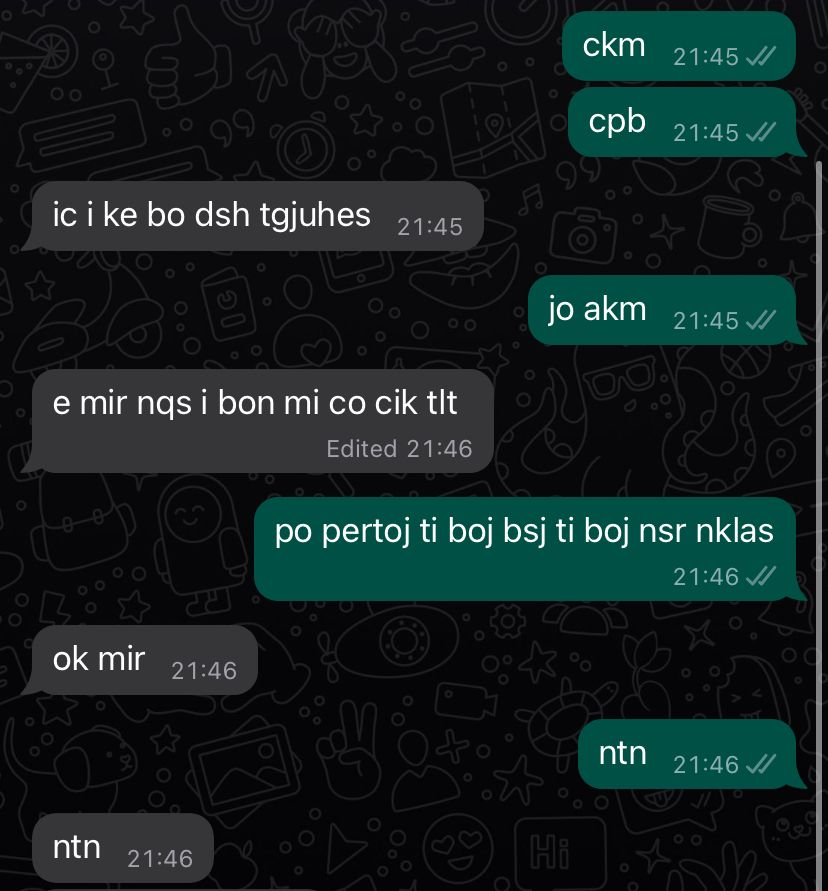

Fjalë me origjinë të huaj që përdoren në gjuhën shqipe
FJALË TË HUAJA NË GJUHËN SHQIPE
- Akomodohu - Rehatohu
- Agravuar - Rënduar
- Relaksuar - Çlodhur
- Puntatë - Pjesë
- Involvoj - Përfshij
- Monstër - Përbindësh
- Bravo - Të lumtë
- Selektoj - Përzgjedh
- Shokuese - Tronditëse
- Ortografi - Drejtshkrim
- Dimension - Përmasë
- Inspirim - Frymëzim
- Show - Shfaqje
- Kreativ - Krijues
- Konkluzion - Përfundim
- Dedikoj - Kushtoj
- Koincidencë - Rastësi
- Inauguroj - Përuroj
- Iniciativë - Nismë
- Kauzë - Çështje
- Evitoj - Shmang
- Kuroj - Kujdesem / Mjekoj
- Starton - Fillon
- Kualitet - Cilësi
- Skonto - Ulje (çmimesh)
- Konstatoj - Vërej
- Civilizim - Qytetërim
- Indiferent - Mospërfillës
- Violencë - Dhunë
- Ambient - Mjedis
- Kuantitet - Sasi
- Sensibilizim - Ndërgjegjësim
- Interaktiv - Bashkëveprues
- Destinacion - Vend-mbërritje
- Preferoj - Parapëlqej
- Kurioz - Kureshtar
- Trauma - Plagë (pasoja)
- Imagjinoj - Përfytyroj
- Fans - Adhurues
- Hit - Këngë
- Predominon - Mbizotëron
- Eksperiencë - Përvojë
- Downloadoj - Shkarkoj
- Uploadoj - Ngarkoj
- Network - Rrjet
- Risk - Rrezik
- Suportoj - Mbështes (moralisht)
- Posedon - Zotëron
- Limituar - Kufizuar
- Spiker - Folës
- Infinit - Pafundësi
- Improvizuar - Sajuar
- Vakant - I lirë
- Look - Pamje (paraqitje)
- Barrierë - Pengesë
- Afirmoj - Pohoj
- Aman - Të lutem
- Apel - Thirrje
- Aprovoj - Miratoj
- Avangardë - Pararojë
- Brutal - I vrazhdë
- Decidoj - Vendos
- Deciziv - Vendimtar
- Dedikoj - Kushtoj
- Definicion - Përkufizim
- Definitiv - Përfundimtar
- Determinoj - Përcaktoj
- Diferencë - Ndryshim (dallim)
- Eksperiencë - Përvojë
- Ekzagjeroj - E teproj
- Ekzakt - I përpiktë
- Eksigjent - Kërkues
- Eliminoj - Zhduk
- Eveniment - Ngjarje
- Evident - I qartë
- Fals - I rremë
- Frekuentoj - Ndjek
GABIMET DREJTSHKRIMORE NË BISEDA MES NXËNËSVE

Në foton e mësipërme, shohim praninë shqetësuese të gabimeve drejtshkrimore, kryesisht të shkurtimeve të fjalëve si:
- ckm - Ç'kemi
- cpb - Çfarë po bën
- ic - Hiç (asgjë)
- bo - Bërë
- dsh - Detyrat e shtëpisë
- akm - Akoma
- nqs - Në qoftë se
- tlt - Të lutem
- bsj - Besoj
- ntn - Natën
Mirush Kabashi - Gjuha Shqype (Gjergj Fishta)
Teksti:
Ah! po; â' e ambël fjala e sajë,
porsi gjumi m'nji kërthi,
porsi drita plot uzdajë,
porsi gazi i pamashtri;
Pra, mallkue njai bir Shqyptari,
qi këtë gjuhë të Perëndis',
trashigim, që na la i Pari,
trashigim s'ia len ai fmis;
edhe atij iu thaftë, po, goja,
që përbuzë këtë gjuhë hyjnore;
qi n'gjuhë t'huej, kur s'asht nevoja,
flet e t'veten e lèn mbas dore.
Në gjuhë shqype nanat tona
qi prej djepit na kanë thânun,
se asht një Zot, qi do ta dona;
njatë, qi jetën na ka dhânun;
edhe shqyp na thanë se Zoti
për shqyptarë Shqypninë e fali,
se sa t'enden stina e moti,
do ta gzojn kta djalë mbas djali.
Pra, shqyptarë çdo fès qi t'jini,
gegë e toskë, malci e qyteta,
gjuhën t'uej kurr mos ta lini,
mos ta lini sa t'jetë jeta,
por për tê gjithmonë punoni;
pse, sa t'mbani gjuhën t'uej,
fisi juej, vendi e zakoni
kanë me u mbajtë larg kambës s'huej,
Nper gjuhë shqype bota mbarë
ka me ju njohtë se ç'fis ju kini,
ka me ju njohtë për shqyptarë;
trimi n'za, sikurse jini.
Prandaj, pra, n'e doni fisin,
kodra, fusha edhe Malcija
prej njaj goje sod t'brohrisim:
Me gjuhë t'veten rrnoftë Shqypnia!